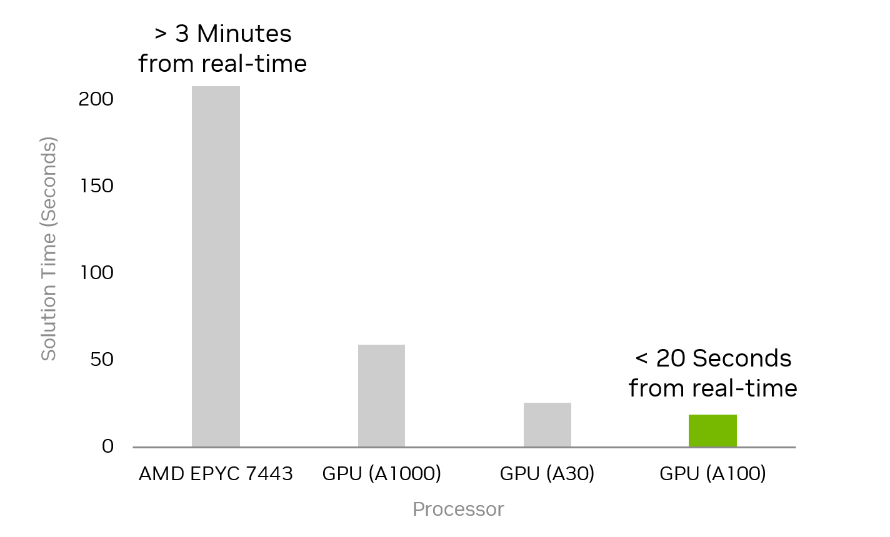

Welcome to
MadSuite
website! Our mission is to deliver optimization software with state-of-the-art GPU acceleration. The performance of GPU-accelerated optimization solvers is successfully demonstrated on the AC optimal power flow problems, optimal control problems, and other large-scale nonlinear optimization problems. For large-scale problems, using GPU acceleration often enables more than an order of magnitude speed-up, as demonstrated with the performance of ExaModels.jl and MadNLP.jl running on GPUs along with CUDSS compared to the state-of-the-art tools on CPUs for solving large AC optimal power flow problems.

Figure 1: Solution time for AC optimal power flow for the 70k bus system running on different hardware
MadSuite is a suite of open-source optimization software encompassing algebraic modeling systems, optimization solvers, linear solvers, and domain-specific modeling libraries. Our software tools are embedded in the
Julia Language
, which is host a variety of excellent libraries for optimization, such as
JuMP.jl
and
JuliaSmoothOptimizers
, as well as extensive support for GPU programming, such as
CUDA.jl
and
KernelAbstractions.jl
. We employ the latest advancements in GPU computing, such as NVIDIA's
CUDSS
library, to provide high-performance solutions for large-scale nonlinear optimization problems.
News
MadSuite will be presented at IEEE PowerTech 2025 in the tutorial session on GPU-Accelerated Optimization for Power Systems with MadNLP and ExaModels. (June 2025)
Useful Resources
NVIDIA Technology Blog: NVIDIA cuDSS Library Removes Barriers to Optimizing the U.S. Power Grid [ Link ]
Julia Discourse: ExaModels.jl and MadNLP.jl on GPUs [ Link ]
Julia Discourse: AC Optimal Power Flow in various nonlinear optimization frameworks [ Link ]
PowerTech 2025: Tutorial on GPU-Accelerated Optimization for Power Systems with MadNLP and ExaModels [ Link ]
Members
Sungho Shin (@sshin23): Sungho Shin is an assistant professor at the Chemical Engineering Department of Massachusetts Institute of Technology.
François Pacaud (@frapac): François Pacaud is an assistant professor at the Centre Automatique et Systèmes within Mines Paris-PSL.
MPCCbenchmark.jl: Large-scale mathematical programs with complementarity constraints
MadNLPBenchmark.jl: Baseline benchmark for tracking MadNLP.jl performance across commits
Publications
Joseph W. Choi and Sungho Shin.
Revisiting simultaneous methods for dynamic optimization in the GPU era.
In Foundations of Computer Aided Process Operations / Chemical Process Control (FOCAPO/CPC). 2027.
Accepted.
arXiv:2607.12201.
David Cole, Sungho Shin, François Pacaud, Victor M. Zavala, and Mihai Anitescu.
Exploiting GPU/SIMD architectures for solving linear-quadratic MPC problems.
In 2023 American Control Conference (ACC). 2023.
arXiv:2209.13049.
Boxun Huang, David Yang Shu, Michel Schanen, Rahul Gandhi, and Sungho Shin.
Harnessing GPU acceleration in large-scale process optimization.
In Foundations of Computer Aided Process Operations / Chemical Process Control (FOCAPO/CPC). 2027.
Accepted.
arXiv:2607.15420.
David Jin, Alexis Montoison, and Sungho Shin.
Harnessing Batched BLAS/LAPACK Kernels on GPUs for Parallel Solutions of Block Tridiagonal Systems.
In 23rd IFAC World Congress. 2026.
Accepted.
arXiv:2509.03015.
Sanjay Johnson, Dirk Lauinger, Sungho Shin, and François Pacaud.
ExaModelsPower.jl: a GPU-compatible modeling library for nonlinear power system optimization.
Electric Power Systems Research, 2026.
arXiv:2510.12897, doi:10.1016/j.epsr.2026.113744.
Alexis Montoison, François Pacaud, Michael Saunders, Sungho Shin, and Dominique Orban.
MadNCL: a GPU implementation of algorithm NCL for large-scale, degenerate nonlinear programs.
2025.
arXiv:2510.05885.
Alexis Montoison, François Pacaud, Sungho Shin, and Mihai Anitescu.
GPU implementation of second-order linear and nonlinear programming solvers.
In NeurIPSWorkshop on GPU-Accelerated and ScalableOptimization. 2025.
arXiv:2508.16094.
François Pacaud and Sungho Shin.
GPU-accelerated dynamic nonlinear optimization with ExaModels and MadNLP.
In 2024 IEEE 63rd Conference on Decision and Control (CDC), 5963–5968. 2024.
arXiv:2403.15913, doi:10.1109/CDC56724.2024.10886720.
François Pacaud, Sungho Shin, Michel Schanen, Daniel Adrian Maldonado, and Mihai Anitescu.
Accelerating condensed interior-point methods on SIMD/GPU architectures.
Journal of Optimization Theory and Applications, pages 1–20, 2023.
arXiv:2203.11875, doi:10.1007/s10957-022-02129-5.
François Pacaud, Armin Nurkanović, Anton Pozharskiy, Alexis Montoison, and Sungho Shin.
An augmented lagrangian method on GPU for security-constrained AC optimal power flow.
Electric Power Systems Research, 2026.
arXiv:2510.13333, doi:10.1016/j.epsr.2026.113627.
François Pacaud, Michel Schanen, Sungho Shin, Daniel Adrian Maldonado, and Mihai Anitescu.
Parallel interior-point solver for block-structured nonlinear programs on SIMD/GPU architectures.
Optimization Methods and Software, 39(4):874–897, 2024.
arXiv:2301.04869, doi:10.1080/10556788.2024.2329646.
François Pacaud, Sungho Shin, Alexis Montoison, Michel Schanen, and Mihai Anitescu.
Condensed interior-point methods for scalable nonlinear programming on GPUs.
Mathematical Programming Computation, 2026.
arXiv:2405.14236, doi:10.1007/s12532-026-00335-0.
Sungho Shin, Mihai Anitescu, and François Pacaud.
Accelerating optimal power flow with GPUs: SIMD abstraction of nonlinear programs and condensed-space interior-point methods.
Electric Power Systems Research, 236:110651, 2024.
arXiv:2307.16830, doi:10.1016/j.epsr.2024.110651.
Sungho Shin, Vishwas Rao, Michel Schanen, D. Adrian Maldonado, and Mihai Anitescu.
Scalable multi-period AC optimal power flow utilizing GPUs with high memory capacities.
In Open Source Modelling and Simulation of Energy Systems. 2024.
arXiv:2405.14032, doi:10.1109/OSMSES62085.2024.10668970.
Sungho Shin, Michel Schanen, François Pacaud, Alexis Montoison, and Mihai Anitescu.
ExaModels.jl: an algebraic modeling system for nonlinear programming on GPUs.
2026.
arXiv:2608.16265.
Tutorials and Talks
IFAC 2026 pre-congress workshop (WS-12), Busan (August 2026): GPU Acceleration in Optimization and Optimal Control.
Website, Slides, Notebooks
PSCC 2026, Limassol (June 2026), François Pacaud: An augmented Lagrangian method on GPU for security-constrained AC optimal power flow.
Slides
SIAM Conference on Optimization 2026, Edinburgh (June 2026), Sungho Shin: ExaModels.jl: a SIMD abstraction for GPU-accelerated nonlinear programming.
Slides
JuMP-dev 2026, Edinburgh (May 2026), Sungho Shin: Can ExaModels power JuMP on GPUs?.
Video, Slides
JuMP-dev 2026, Edinburgh (May 2026), François Pacaud: Batched optimization solvers: a tour d'horizon.
Video, Slides
GT Optimisation, Paris (March 2026), François Pacaud: Accelerating optimization solvers on GPUs.
Slides
RTE R&D, Paris (March 2026), François Pacaud: Solving large-scale LPs on modern GPUs.
Slides
IIT Applied Mathematics Seminar, Chicago (January 2026), Alexis Montoison: MadSuite: GPU solvers for large-scale optimization.
Event
NeurIPS 2025 ScaleOpt workshop, San Diego (December 2025), Sungho Shin: GPU implementation of second-order linear and nonlinear programming solvers.
Event
ICCOPT 2025, Los Angeles (July 2025), Alexis Montoison: Recovering sparse DFT on missing signals via interior point method on GPU.
Event
Guest lecture, TU Hamburg (July 2025), François Pacaud: Solving large-scale optimal power flow instances.
Slides
IEEE PowerTech 2025 tutorial, Kiel (June 2025), François Pacaud and Sungho Shin: GPU-accelerated optimization for power systems with MadNLP and ExaModels.
Website
SYSCOP seminar, University of Freiburg (April 2025), François Pacaud: GPU-accelerated nonlinear programming with MadNLP.
Slides
MIT CSE Community Seminar (April 2025), Sungho Shin: Solving large-scale, sparse, constrained nonlinear optimization problems on GPUs.
Event
IEEE CDC 2024, Milan (December 2024), François Pacaud: GPU-accelerated dynamic nonlinear optimization with ExaModels and MadNLP.
Slides
ICTEAM seminar, UCLouvain (December 2024), François Pacaud: MadNLP: a GPU-ready interior-point solver.
Slides
Julia & Optimization Days 2024, Toulouse (October 2024), François Pacaud: MadNLP: nonlinear programming on GPUs.
Slides
Recorded talk (April 2024), Sungho Shin: Large-scale nonlinear programming on GPUs: state of the art and future prospects.
Video
JuMP-dev 2022 at JuliaCon (July 2022), François Pacaud: Streamlining nonlinear programming on GPUs: towards a vectorized modeler?.
Video, Slides
ICCOPT 2022, Bethlehem (July 2022), François Pacaud: Reduced-space interior-point: a GPU accelerated comeback.
Slides
JuMP track at JuliaCon 2021 (July 2021), Sungho Shin: MadNLP.jl: a mad nonlinear programming solver.
Video
JuMP-dev 2021 (July 2021), François Pacaud: Towards nonlinear programming on the GPU.
Video